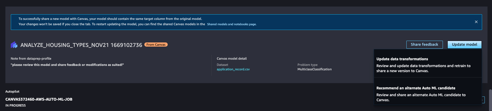

Collaborate with data scientists
Note
Collaboration on models with Studio users isn’t supported for single-label image prediction, multi-category text prediction, or time series forecasting model types.
Additionally, SageMaker Canvas doesn't support sharing your model to the same user profile as the one that created the model. You must have two separate user profiles to share a model.
With Amazon SageMaker Canvas, business analysts using Canvas and data scientists using Amazon SageMaker Studio can share ML models and collaborate with each other while working in their own environments to share domain knowledge and provide expert inputs towards improving models.
Using SageMaker Canvas collaboration, you can share Standard build models from Canvas with data scientists in Studio to review, update, and share back with Canvas users. Users in Canvas can share one version of a model with up to 23 Studio users.
The following sections describe the steps for collaboration:
In the Canvas application, a business analyst shares their model with a Studio user.
The Studio user receives the shared model in the Studio application. They can choose to share feedback with the analyst, make updates to the model, or share an alternate model version.
The business analyst receives the feedback or updated model in Canvas and can generate predictions in view-only mode.
To collaborate, the Canvas user and Studio user must be in the same Amazon SageMaker Domain. For more information about setting up your Domain and users, see the SageMaker Canvas Prerequisites.
Note
Model collaboration is different from Bring your own model to SageMaker Canvas, where you can bring a model that you’ve trained anywhere and import it into Canvas for generating predictions.
Prerequisites
Before a Canvas user and Studio user can collaborate on models, the users' IAM role must have AWS Identity and Access Management (IAM) permissions to share models. If you haven’t already set up permissions, see Grant Users Permissions to Collaborate with Studio.
The Canvas user must also have a Standard build model trained in Canvas and ready to share.
Note
Collaboration does not support Quick build models.
You should also have the user profile name of the Studio user with whom you want to collaborate. The Studio user must be in the same Amazon SageMaker Domain as your Canvas user. You can find a user’s profile name by using the following procedure:
Open the SageMaker console at https://console.aws.amazon.com/sagemaker/
. In the navigation panel, choose Domains.
From the list of Domains, choose your Domain. This opens the Domain details page, where you can find all of the User profiles for the Domain.
Keep the user profile name ready for the first step of the following tutorial.
Canvas users: Share a model with Studio users
Within the Canvas application, share your model version with Studio users or request feedback from them. You should use a model version that has been built; you can’t share a model version that is a draft or currently building. You can only share one version per model.
To share your Canvas model with Studio users, use the following procedure.
Open the SageMaker Canvas application.
From the Models page, select the model that you want to share. You can only share Standard build models.
In the header, choose Share.
-
In the Share Model dialog box, do the following:
-
From the Choose a model version to share dropdown list, select the model version for which you want feedback.
-
From the SageMaker Studio users dropdown list, select Studio users by their profile names. You can add up to 23 Studio users.
-
For the Add a note field, you can enter a quick note that accompanies your model when you send it to the Studio users.
Choose Share.
In the Share Model confirmation box that appears, choose Share.
-
You have now shared your model with the Studio users, and the users receive a notification in Studio that a model has been shared with them.
Studio users: Receive a model in Studio from Canvas users
In Studio, if a model has been shared with you, you receive a notification similar to the following when you open the Studio application.
Choose View shared models to open the Shared models and notebooks page in Studio. If you miss the notification, you can find the Shared models and notebooks page by doing the following:
Open your Amazon SageMaker Studio application.
In the side navigation pane, choose the Home icon (
 ).
).In the side navigation bar that opens, choose Models.
In the dropdown list, choose Shared models to open the Shared models and notebooks page.
On the Shared models and notebooks page, select the filter Shared with me. You should see the Canvas model that has been shared with you in the list of shared models. Choose View model on the shared model, which opens the model details page in Autopilot. The opened model should have a banner at the top that looks similar to the following screenshot.
From this page, you can see the model details, as well as any notes about the model shared with you by the Canvas user. In the Canvas banner at the top, you can choose the following actions:
Share feedback with the Canvas user.
Make updates to the shared model and share the updates with the Canvas user.
Share an alternate version of the model with the Canvas user. Canvas uses Autopilot to train multiple versions of the model and select the best version. You can select a different version if you decide that it’s better for your use case.
For more information on the preceding actions, see the following sections.
Share feedback
You might want to send a comment or feedback to the Canvas user without making any changes to the model.
To share feedback on the shared model, use the following procedure:
On the model details page, choose Share feedback.
In the Share feedback dialog box, add a note in the Add feedback field.
Choose Share to send the feedback to the Canvas user.
After giving feedback, you can view the feedback you sent in the Canvas banner at the top of the model details page. The Canvas user receives the feedback in the Canvas application and can make changes based on your feedback.
Share an updated model with the Canvas user
You might want to make changes to the model that the Canvas user shared with you. For example, you might want to use advanced data transformations such as one-hot encoding to improve the accuracy of the model. You can update the model with Amazon SageMaker Data Wrangler and Amazon SageMaker Autopilot in Studio, which are features that help you make data transformations and train your model.
Warning
If you exit the following workflow at any time, your model updates are not saved, and you must restart the workflow.
To update the model and send the updated model to the Canvas user, use the following procedure:
On the model details page, in the Canvas banner, choose Update model.
-
In the banner’s dropdown list, choose Update data transformations.
 -
The workflow opens your model in Amazon SageMaker Data Wrangler, where you can choose to edit the data transformations used for the model. Make your data transformations in the Data Wrangler interface. For more information about Data Wrangler and the data transformations you can use, see the Data Wrangler documentation.
After you’ve finished your data transformations, choose Retrain model on the Canvas banner to open the Export data and train a model with SageMaker Autopilot page in the Data Wrangler interface.
Verify the fields on the Export data and train a model with SageMaker Autopilot page, and then choose Export and train to export your data transformations to Amazon SageMaker Autopilot.
-
The workflow opens the Create an Autopilot experiment page in Autopilot, where you can create an Autopilot experiment and retrain the model with the updated data transformations. Fill out the fields for each of the Create an Autopilot experiment pages.
For more information about Autopilot and Autopilot experiments, see Create an experiment in the Autopilot documentation.
After you’ve finished configuring your Autopilot experiment and reviewed the final settings, choose Create experiment in the Autopilot interface to begin training the model. The model trains, during which you can choose Stop training in the Autopilot interface at any time.
-
After the model has trained, the Canvas banner at the top of the page compares the metrics of the old model with the updated model. The Best model summary lists the metrics, such as Recall and Precision, and whether the new model improves the metrics or not. Review the metrics and decide whether you would like to share the updated model or not. For more information about Autopilot metrics, see Metrics and validation.
If you decide that you want to share the updated model with the Canvas user, choose Share in the banner.
-
In the Share dialog box, do the following:
-
For the Select a model to share dropdown list, the best model from your Autopilot experiment should already be selected and marked with a label Best Candidate. If the model version that you want to share is not selected, open the dropdown and select the correct version.
-
For the Add feedback field, you can enter a note for the Canvas user.
Choose Share to share the updated model and note with the Canvas user.
-
After sharing the model, you receive a notification that your model was shared successfully similar to the following screenshot.
You can choose View shared models in the banner to return to the Shared models and notebooks page. From this page, you can see the updated model that you shared with the Canvas user under the Shared by me label.
Share an alternate model with the Canvas user
When SageMaker Canvas builds a model, Amazon SageMaker Autopilot trains multiple versions of the model and selects the best one. You might decide that an alternate version of the model is better according to your needs. You can share an alternate Autopilot version of the model with the Canvas user instead of making changes to the one they sent. For more information about Autopilot, see the Autopilot documentation.
To share an alternate model, use the following procedure:
On the model details page, in the Canvas banner, choose Update model.
In the banner’s dropdown list, choose Recommend an alternate Auto ML candidate.
The page for the Autopilot job opens where you can review all of the trained model versions. When you're ready to share an alternate version, in the Canvas banner at the top of the page, choose Share.
-
In the Share dialog box, do the following:
-
For the Select a model to share dropdown list, the best model from the Autopilot experiment is selected and marked with the label Best Candidate. Open the dropdown and select the alternate model version that you want to share.
For the Add feedback field, you can enter a note for the Canvas user.
Choose Share to share the alternate model version and note with the Canvas user.
-
After sharing the model, you receive a notification that your alternate model was shared successfully similar to the following screenshot.
You can choose View shared models in the banner to return to the Shared models and notebooks page. From this page, you can see the updated model that you shared with the Canvas user under the Shared by me label.
Canvas users: Receive model updates from a Studio user
When a Studio user shares an updated or alternate model with the Canvas user, the Canvas user receives a notification.
In the Canvas app, the notification looks like the following screenshot.
You can choose View update to see the updated model, or you can go to the Models page in the Canvas application and select the shared model to view it.
Note
Canvas users can’t edit a model that has been shared with them by a Studio user. Models imported from Studio are view and predict only.
A model on which a Studio user has collaborated looks like the following card on the Models page.
The model import from Studio can take up to 20 minutes, during which the model shows as Importing.
After importing the model, you can view its metrics and generate predictions with it.
The following screenshot shows the Analyze tab, where you can evaluate the model accuracy and metrics. For more information, see Evaluate Your Model's Performance in Amazon SageMaker Canvas.

The following screenshot shows the Predict tab, where you can generate predictions with the model. For more information on generating predictions in Canvas, see Make predictions for your data.

On both the Analyze and Predict tabs, you can see the Shared History panel, which shows you the model versions and comments shared with you by Studio users.